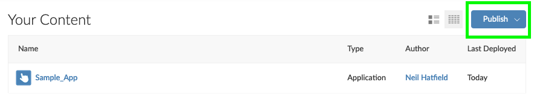

Chapter 1 Workflow
Before we get too far into designing, building, and maintaining BOAST apps, it is helpful to take a moment and talk about setting yourself up for success. One way to do this is through the notion of a workflow. In essence, you want to come up with a series of steps to follow. Writing this list out can provide you with something where you can take a step back and go “Wait. Where am I again? Oh yeah.” This is particularly important as there will be times when you find yourself lost in coding and losing track of your broader goals.
We have two major workflows within BOAST: Revising existing apps and creating brand new apps.
Something to keep in mind with these workflows is that they are not strictly linear. That is, just because you have moved into Step 3, doesn’t mean that you can’t go back to Step 2 and make revisions. Additionally, as you get into Steps 5-8, you might find yourself coming back to Step 3 (and possibly Step 2) and making changes. This said, sketching out your plans will help you as you move forward with developing.
1.1 Revising Existing Apps Worflow
- Read the Style Guide.
- Explore the existing apps in the book and their associated repositories on GitHub.
- When you identify an app you wish to work on,
- Go to that app’s repository in GitHub.
- Look through the
README.mdand theDESCRIPTIONfiles (if present) so that you can get a sense of what the aims of the app are. - Play with the app after going through 3b; ask yourself how the app demonstrates the aims. If the app doesn’t, note this.
- Create new issues on GitHub to log both bugs and suggestions for improvements.
- Create an issue specifically if the App currently does not abide by this Style Guide.
- Optional—assign yourself to the issue.
- Download the current version of the app by using either GitHub Desktop or RStudio.
- Create a new branch for your developments.
- Plan out your changes…ON PAPER.
- Discuss your edits with others to get feedback and additional suggestions.
- Begin editing the code.
- As you edit, be sure to reference this Style Guide and test your code locally via Run App in RStudio.
- Periodically push your edits to your development branch; don’t forget to add commit messages and reference any issues.
- When you’re ready to do larger scale testing you’ll need to publish your App to the TLT RStudio Connect server (see Section 1.3).
- When you’ve reached a point where you’ve finished editing, push your most recent commit to your development branch and then create a Pull Request
- You will automatically get assigned at least one Reviewer (you will also be asked to review other people’s code)
- Make any requested changes and re-push to your development branch
- Eventually, your code will get a final review before being formally approved.
If everything checks out, then we’ll merge your development branch with the master branch and schedule formal deployment of your App.
1.2 Creating New Apps Workflow
To see this workflow in action, check out Chapter 2.
- Read the Style Guide.
- Identify a topic for your new App.
- Sketch out your plans for the App…ON PAPER. This should occur BEFORE you start coding. Be sure that you include:
- Suggested Full Title and Short Title
- Goal(s) of the app
- What will the user be doing (i.e., potential inputs)
- What will the user be experiencing (i.e., potential outputs), and
- Relationships between various elements.
- When your plan gets approval, create a new repository on GitHub (see Section 1.2.1) using the App Template as the template for your new repository.
- Begin writing the code.
- As you edit, be sure to reference this Style Guide and test your code locally via Run App in RStudio.
- When you get the basic structure of your App set up, push your code to GitHub and create a new development branch for your continued editing. You can open new issues on your app as you go.
- Periodically push your edits to your development branch. Don’t forget to add commit messages and reference any issues.
- When you’re ready to do larger scale testing you’ll need to publish your App to the TLT RStudio Connect server (see Section 1.3).
- When you’ve reached a point where you’ve finished editing, push your most recent commit to your development branch and then create a Pull Request.
- You will automatically get assigned at least one Reviewer (you will also be asked to review other people’s code)
- Make any requested changes and re-push to your development branch
- Eventually, your code will get a final review before being formally approved.
If everything checks out, then we’ll merge your development branch with the master branch and schedule formal deployment of your App.
1.2.1 GitHub Repo Names
Each Shiny App has its own repository (repo) on GitHub. As you begin to create new apps, you’ll have to create a new repo on GitHub for each one. The name of that repo is extremely important as this will play a critical role in establishing the URL for your App. To this end, you need to adhere to following guidelines:
- Use Title Case (not camelCase)
- Use underscores ( _ ) instead of spaces
- Match the App name as closely as possible
- You have a 100 character limit
Be as descriptive as you can with your repo name; this will improve the indexing of your app.
While we can change repo names, doing so results in a large number of edits that have to be made. Thus, think carefully about how you are going to name your repository.
If you come across a repo that is poorly named, please make an issue on the repo, and provide some suggestions for new names.
1.3 Testing Your App
To test your App beyond your local machine, we will be making use of TLT’s RStudio Connect platform. You will need to follow these directions.
1.3.1 Set Up/Login to the VPN
Please refer to the following PSU Knowledge Basis Articles:
- VPN for Windows
- VPN for Mac OS 10.x
- VPN for Mac OS 11.x
- VPN for Linux OS
- VPN for Apple iOS
- VPN for Android
You MUST be logged into the PSU VPN to both upload and test your App on each device.
1.3.2 Connecting Your RStudio to TLT’s RStudio Connect
You only need to do this step once.
- After you’ve logged into the PSU VPN, go to TLT’s RStudio Connect and log in using your PSU ID.
- Once logged in, click on the Publish button as shown in the green box of Figure 1.1

Figure 1.1: Click the Publish Button
- Select Shiny App and a pop up window will appear.
- Follow the steps in this window (especially Step 4) to set up the connection.
1.3.3 Publishing Your App for Testing
Make sure that you are connected to PSU’s VPN and that you’ve already connected your RStudio to TLT’s server.
Click on the Publishing Icon, located just to the right of the Run App button. Be sure to select the TLT Server.
1.3.4 Configuring for Testing
Once your App has been published, a new window should open in your browser that shows your App plus the optional controls.
Figure 1.3: Successful Publish and Settings
In Figure 1.3, you will need to change a setting to enable others (people and devices) to test your app. Click on the Access tab and set Who can view this application to Anyone-no login required. (These are highlighted in the green boxes.) Keep in mind that all users/devices MUST first connect to the PSU VPN to access your app.
We encourage you to add contributors as we did (orange box). Both Bob and I are the Go To people for tech issues and by adding us, you give us the ability to help you the best that we can. By adding us to the list of contributors on the TLT server, you will allow us to check the app’s log files as well as any particular settings. Ultimately, this help us troubleshoot any difficulty you might encounter.
The most important piece is the Content URL (marked with the blue star). You’ll need to copy this URL and give that URL out to your testers. This will allow them easily access your app, regardless of the type of device (e.g., computer, tablet, phone) they are using.
1.3.5 Check the Logs
As you test your App, you’ll want to look for any error messages and/or warnings that get generated. Click on the Logs tab (red box in Figure 1.3) to view.
1.3.6 Problems?
If you run into problem either publishing your App or getting the App to launch on the TLT, please reach out to Neil and Bob.